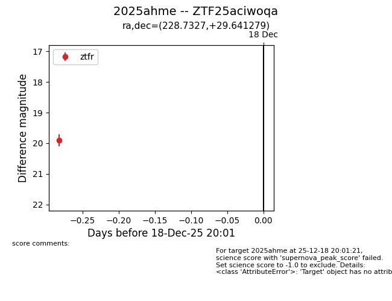
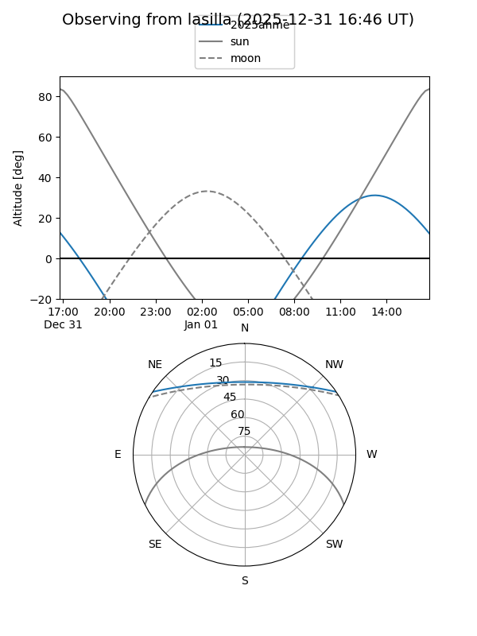
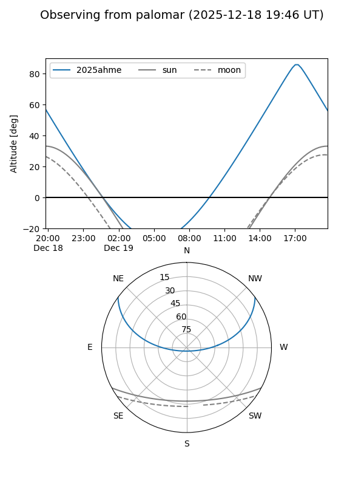

2025ahme
Target 2025ahme at 2025-12-31 16:59
Aliases and brokers:
FINK:
Lasair:
ALeRCE:
TNS:
YSE:
alt names
ZTF25aciwoqa (ztf,fink_ztf)
2025ahme (tns,yse)
Coordinates:
equatorial (ra, dec) = 228.7327,+29.64128
equatorial (HMS+DMS) = 15:14:55.85,+29:38:28.60
galactic (l, b) = (46.0854,+58.46413)
Flags:
Photometry:
last ztfg=19.67, ztfr=19.87
2 ztfg, 3 ztfr detections
Lightcurve

Visibility


Additional plots